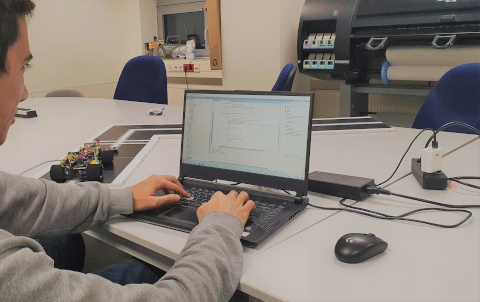

Cool Projects I have worked on
Renesas Robot Rally
I was a member on the team, from the EAH Jena, who Developed a fully autonomous robot car from scratch, able
to traverse the Renesas track for the Renesas Car Rally Event at Embedded World Exhibition 2020.
I had so much fun working on this Project in a team.
The Team consisted of 2 Precision Engineering students that did the CAD and mechanics,
in addition to 6 from the department of Electrical Engineering (including me), That worked on the sensors Network,
Motors and the programming of the robot, on a custom Renesas Board.
We then divided ourselves into 2 teams of 4, to create 2 independant robots with the same goal.
The 2 departments worked together to try design a mechanically efficient and robust robot, able to traverse the specified Renesas Track.
Sadly though....after months of work, and 2 weeks before the actual rally, the Exhibition was cancelled
because of the COVID-19 Pandemic back at end of February 2020.
Our creation didn't get to see the light of day,
but the University decided to use this robot and the track we built, as a fun demo to show young students graduating high school,
what they would learn if they study Electrical Engineering or Precision Engineering.
Here is a picture of me at one night, trying to get the 90° curves logic consistently working at high speeds:

Real-time Operating Systems (RTOS)
I have experience so far with 2 RTOSs, the one we used at the University with various projects: FreeRTOS. and one that
we played with at Navimatix: Zephyr.
At the university: I finished a project, where I implemented a simple Command Interface using
the UART on an STM32 board, to issue control-commands to the processor to do various stuff. for example:
fetch various forms of data from sensors (Temperature, Acceleration...etc), do something with
that data, do something based on that data, interface with a Filesystem to store data and so on...
At Navimatix: I played around a lot with Zephyr, writing Drivers for custom hardware,
configuring its Kernal to fit our custom Board and eventually writing Applications that run on Zephyr.
Zephyr and FreeRTOS are very different from each other. but they both did what an RTOS does.
The current project at Navimatix is still under development, cooperatively with multiple international teams in
different companies so i cannot share in-depth details about what we are actually working on.
Navimatix Uni2Cast
Worked briefly on the Navimatix Uni2Cast Project. where my task was to implement certain
communication protocols for IoT devices.
unfortunately I cannot share more information than
that, since the product is still in development.
but here is a link to the Project on Navimatix's Website: https://www.navimatix.de/forschung-und-entwicklung
Serimed Terminal App
I was offered a task from the company Serimed, to make them a web app that helps them more
efficiently do their Job of:
-
dynamically reporting back the examination of their medical
devices to customers
-
make it easy for the customers to register for a Serimed service and staying up-to-date
through a Frontend portal
-
have a cleaner and more manageable database of their customers (and their data) than the one
they had
a Fullstack web development project, something that I have only had basic knowledge about so far, so i decided
to broaden my horizon and take a break from Game Development to try something new.
I took the task and created a fully functioning prototype system in the 6 months contract i had with
the company Serimed. then towards the end of the my development phase, I had a lot of meetings with another company called Jendata
Computersystems GmbH, to transition my Prototype into Production, which became Jendata's job.
Generic IK
This is one of my favorite projects I've worked on. this project I developed in my spare-time
for fun, out of my passion to action Video Games.
Introduction:
Generic IK stands for Generic Inverse Kinematics. which is basically a set of equations
(algorithms) that controls the motion of each connected rigid body in a chain, connected
rigid-bodies are referred to as "joints".
The goal is to orient/position the last joint (called
"End-Effector") in the chain to reach a specific target.
to simplify more: think about how your brain automatically controls the limb muscles of each joint from your
shoulder down to your palm,
in order to let your palm (End-Effector) reach a target (a cup of Tee for example)
it is used extensively in computer graphics to achieve dynamics 3D character animations, animations that interact with Environment.
and also in the robotic industry, to control for example a robotic arm on an assembly line.
of course, for each application the algorithm needs to be adjusted a bit
what I have done, is implementing some algorithms to apply that effect to any shape/form of
joints, not only characters (hence Generic). with some extra simulation features like, Joint Motion Range,
to allow the user to set motion limits, a User
Interfance to drive the internal API and many other
Code and Youtube demo videos linked here:
Github Repository: https://github.com/MoatyX/Generic-IK
Youtube Demo: https://www.youtube.com/watch?v=HvEiKmXeikE
Animation Combo System
Another project coming out of video games. I created this plugin after Generic IK, for a 3D
fighting game i was developing in my free time for fun.
basically: its a system to register a specific key-input sequence, and bind that with a specific
character animation sequence.
in a fighting game, you would like to chain the attacks (i.e: do an attack combo) so you can
re-use single animation clips of punches for example, play them in different order, to create an
attack sequence. ACS allowed you to very easily do that, and took care of stuff like animation
Synchronisation, triggering user-specified logic and registering key sequences.
Github Repository: https://github.com/MoatyX/Animation-Combo-System
Youtube Demo: https://www.youtube.com/watch?v=nerQlE9L2MY